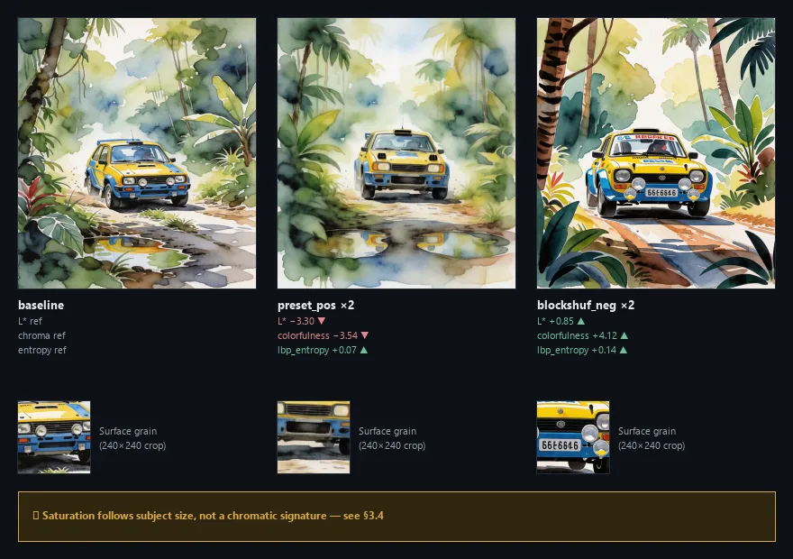
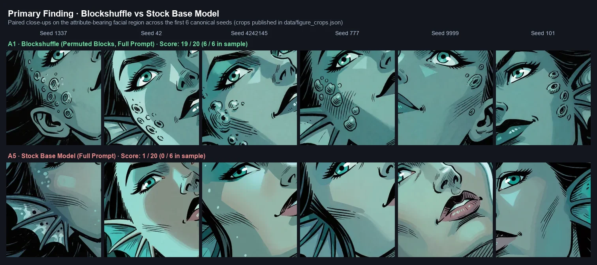
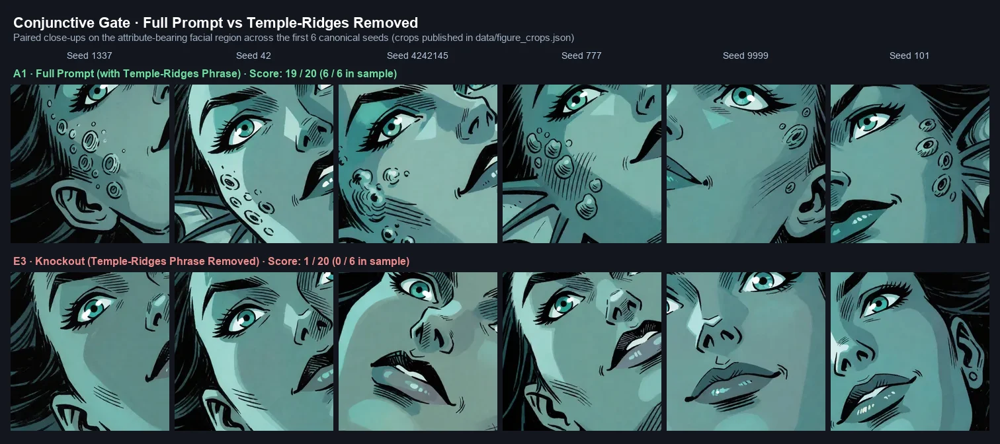
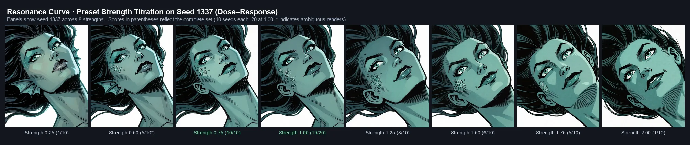
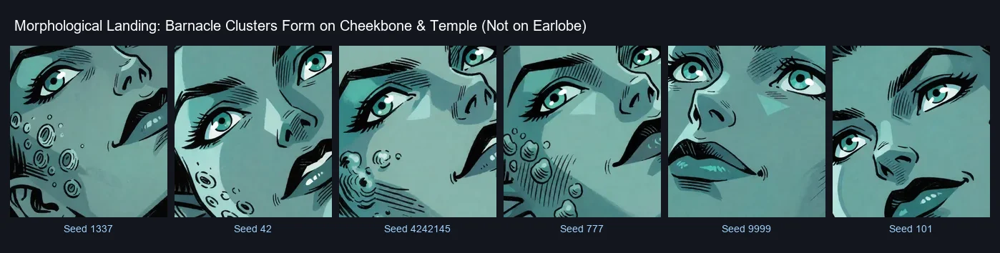
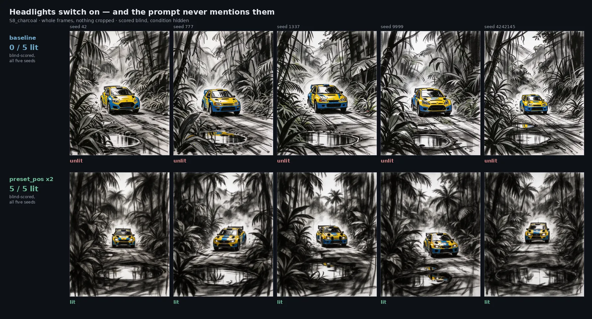
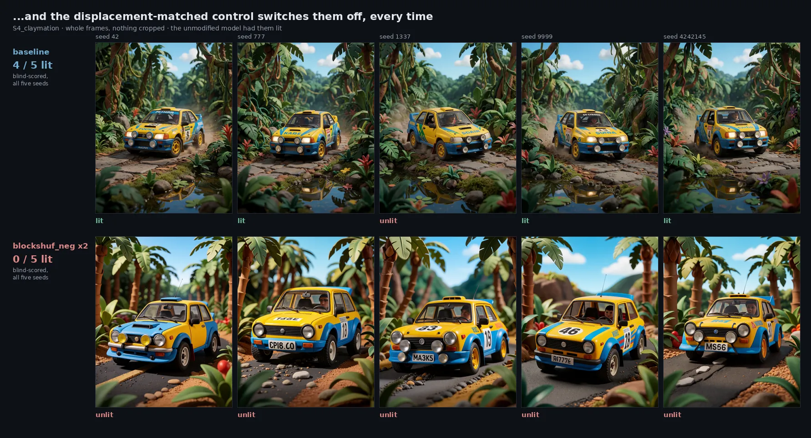
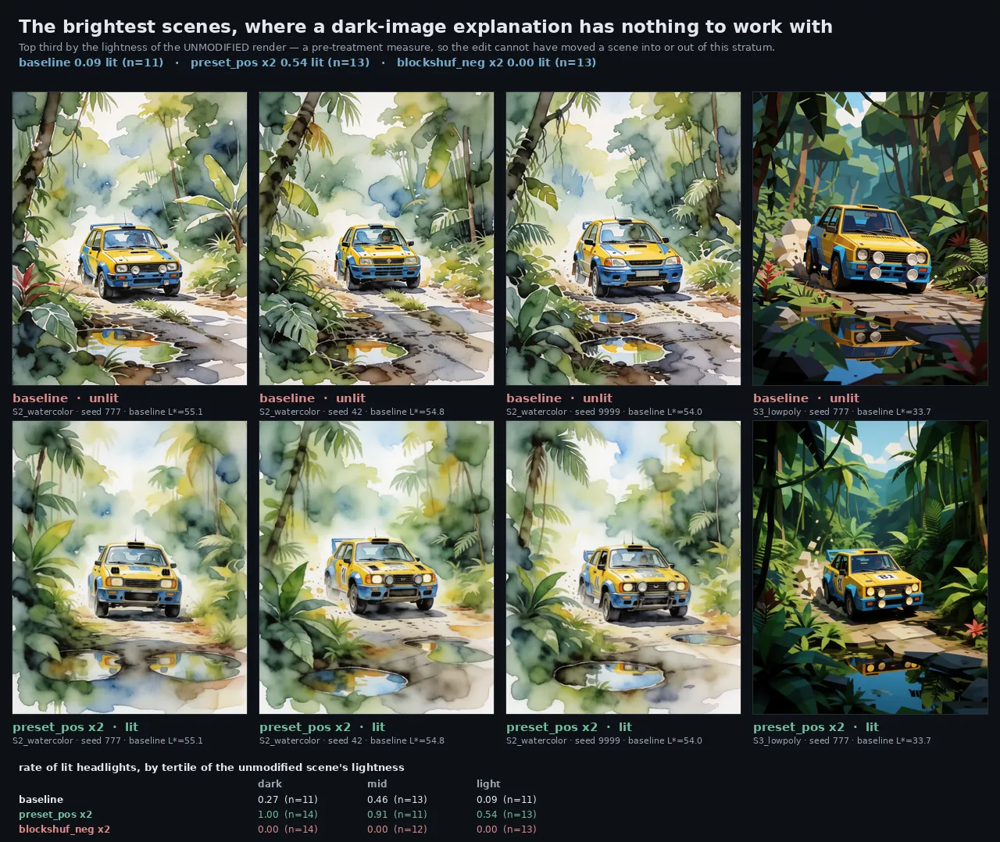
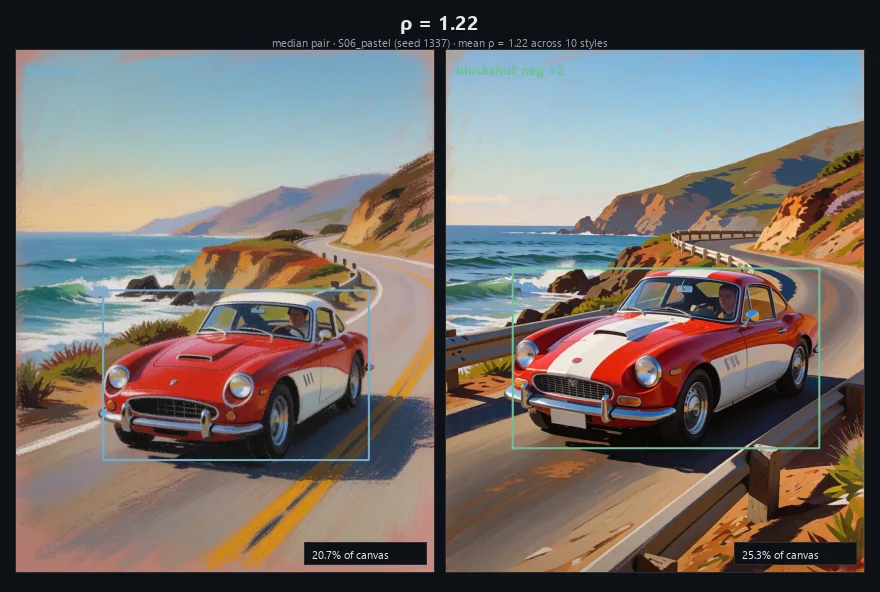
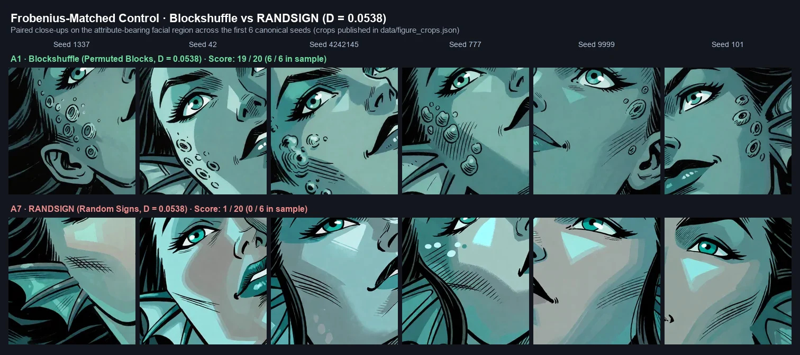

Weight-space steering in Krea-2 DiT
The previous iteration of this experimental record concluded that nothing was there. That conclusion was correct for what it measured and wrong about what to measure: every readout was passed through a 224×224 CLIP latent space where stroke thickness no longer exists. Once a second measurement space was built specifically on rendering technique, the condition hierarchy inverted and a robust positive finding emerged across four independent instruments.
Synchronized 5-Seed Showcase
Live Visual InspectionIdentical across every condition and seed above — only the weights change.
prompt_sha1 is the first ten hex characters of its SHA-1 and the folder name under
assets/: it is how “the prompt was not touched” is checked rather than asserted.
A 53 KB configuration steers a 12.8 Billion parameter DiT: With zero retraining compute, zero multi-megabyte LoRA adapters, and zero prompt text changes, a compact 53 KB file of calibrated block deltas and orthogonal rotations shifts the stroke geometry consistently across every seed.
0 Read this first
This document serves as an open research notebook subject to falsification. The findings reported here specifically concern the Krea-2 DiT (28 blocks) architecture with the Qwen3-VL 4B multimodal encoder, originating from exploration conducted with the ComfyUI node suite Arthemy-Krea2-Tuner.
Formal replication under an identical norm-matched ($D$-Frobenius) protocol is currently active on our second target model (circlestone-labs/Anima, built on nvidia/Cosmos-Predict2-2B-Text2Image).
At Frobenius relative displacement strictly matched across the exact same tensors, a hand-crafted weight perturbation steers the physical way the image is drawn — stroke continuity, contour length, line thickness — along a reproducible direction across distinct subjects. Two norm-matched controls fail to do so, and one merely injects broad-band texture. Crucially, this entire effect is invisible to a CLIP metric — not because signs invert, but because which contrast the instrument can resolve inverts (§4).
The three key takeaways, in order of durability:
- A methodology — exactly norm-matched controls for weight-space interventions (§8).
- A metric warning — empirical conclusions invert between semantic space and rendering-technique space (§4).
- An empirical finding — only the targeted configuration steers stroke morphology (§3).
- A second, different empirical finding — a norm-matched perturbation can move a neglected prompt attribute from 5% to 95% presence, but only where the prompt already binds it (§6).
The most practically valuable section for replication is §9: twenty-eight real-world measurement pitfalls, none of which produced absurd numbers. All produced plausible values.
1 Introduction — how I got here
Two years ago, as Arthemy, my workflow for training models looked like this. Download a model plus a few fine-tunes with aesthetics close to what I wanted, then block-merge them at different strengths per block until I landed near the look I had in mind. Alongside that, train extremely narrow concept LoRAs and distil them hard: activate only specific sections, train five, keep only what they had in common, then inject the result back into the model.
At some point I started playing with values that are not supposed to be used. The question was simple: instead of sliding between 0.0 and 1.0, what happens if I force a value below zero, or above one? What came out was an amplification of one model's magnitude — but always relative to a second model, because that is what a merge is.
That is when I started wondering whether the same operations could work with one model alone: amplify or attenuate some of its own sections mathematically and see how the output changes. My SDXL tool, Arthemy Live-Tuner, is the evidence of that first attempt — a prototype, not much to look at, but the principle was already there. Those experiments convinced me that amplifying or attenuating distinct parts of a model changes its style coherently rather than randomly.
Block-weighted merging is well covered — supermerger, Merge Block Weighted, ComfyUI's native merge nodes — but every one of them needs at least two checkpoints: the knob mixes model A into model B, block by block. LoRA Block Weight does the same for an adapter's delta, and task arithmetic scales a task vector, which again presupposes a fine-tune to difference against. What none of them does is operate on a single checkpoint with nothing to mix it with. The only public tools I could find that do that are ones I wrote myself.
The operation is arithmetically trivial — scale a block's weights by α. That is probably why nobody wrote it up. What is not trivial is that the trivial operation produces a coherent stylistic direction instead of degradation.
Which is the second thing that sank in: none of what I was doing had ever been demonstrated properly. I had observed it on my own screen, repeatedly, and that is not the same as showing it. So I decided to push the intuition until it breaks. At best it becomes a usable way to change a model's style with no fine-tuning and no LoRA, from a configuration file under 100 KB.
What I think is actually going on
Written a while back, on Reddit, before most of the measurements on this page existed:
Think of a model as a mountain range and your prompt as the spot where you pour a bucket of water. Water follows gravity, AI follows probability — similar prompts usually make the water roll into the same valley every time. It's highly probable that the exact look you want already exists somewhere on that mountain. It just never shows up, because the terrain doesn't incentivize the water to reach it. Traditional fine-tuning expands upon the whole range to fix that, but you don't need that most of the time: dig one canal, shift one ridge, and the water finds a new home.
I have since said it a second way — that base models are balanced, and that we could unbalance them toward the look we want. Those two sound like one idea and they are not, which took a full day of measurements to notice. “Unbalance toward comics” says there is a fixed amount of ability being traded: gain on one thing, lose on another, like a graphic equaliser. To claim that, you have to show the thing that got worse — and that was never measured. The mountain says something weaker and therefore easier to earn: the ability is all still there, and the edit changes where the water ends up, not how big the mountain is.
| Effect | Did the stock model already do it? | After the edit |
|---|---|---|
| lit headlights §6.8 | yes — 10 renders of 35 | 31 of 38 |
| barnacles §6.1 | yes — 1 of 20 | 19 of 20 |
| subject's share of frame §7.1 | yes — 13% of canvas | 28% |
| parallel vs crossed hatching §5.2 | yes, both | which one wins flips with the sign |
| rally car turning into an SUV | yes, it can draw both | which one shows up changes |
Not one measured effect is a new ability appearing. They are all shifts in how likely something is that the model was already doing, sometimes rarely. Headlights went from 29% to 82%; barnacles from 5% to 95%. Neither was taught — both were made probable. So the claim this notebook is actually testing, stated so it can be checked on any model:
A small structured weight edit redistributes the probability of what comes out toward regions the model already reaches, without adding capability.
That sentence is falsifiable in a way “it changes the style” is not: if an edit ever produced something the stock model never produces in any seed, the mountain would be wrong. And it is portable — it can be tested on a model that shares nothing with this one, which is the point of §8.2.
Experiment 1 rests on 1272 renders across 24 prompts. Every table about stroke morphology, colour, PCA and CLIP is a different measurement of that same corpus, not an independent replication. Experiment 2 rests on a separate corpus of 390 renders. Anyone counting five experiments from the section headings would be counting measurements.
2 Experimental Design & Matched Controls
2.1 Three conditions, matched in displacement
All three conditions modify the exact same 1059 tensors (430 DiT blocks + 629 text encoder layers)
with the exact same relative Frobenius displacement: D_model = 0.05381584,
D_CLIP = 0.02165930 across 341 language layers.
| Condition | Construction | Norm Matching |
|---|---|---|
| preset | hand-crafted configuration; 5-D disabled, granular bypass removed | — |
| RANDSIGN | each value → |v| with random sign | exact by construction: D = sqrt(Σ(δ‖W‖)²) is independent of sign |
| BLOCKSHUFFLE | block profiles permuted across layers (derangement, seed 20260914) | via calibration: α measured and applied only to the permuted subset |
Every condition has its corresponding NEG (values multiplied by −1, including rotation angles), enabling the canonical linear decomposition:
d± = emb(±preset) − emb(baseline at IDENTICAL seed) S = (d+ + d−)/2 symmetric part, sign-invariant "magnitude / isotropic effect" A = (d+ − d−)/2 antisymmetric part, sign-inverting "directional steering"
The 4 rotation recipes on Block_3 (±10°, seeds 82/60/59/56) are identical between preset and BLOCKSHUFFLE: the two differ solely in scalar block assignments.
2.2 Why BLOCKSHUFFLE exists
RANDSIGN initially appeared to be the ideal control until the internal structure of the preset was audited. Across 1059 values, there are only 78 distinct values at 1e-4 precision:
CLIP 31 text layers × 11 tensors, dev 0.000000 within each layer, 6 distinct groups
288 vision tower tensors, all exactly −0.025
DiT 28 blocks × 13 tensors, identical tensor suffixes across blocks
B10..B14 dev 0.000000, alternating −0.025 / +0.0225
B00..B04, B15..B19, B20..B23, B24..B27 dev ≤ 0.0004
B05..B09 dev 0.077, from −0.045 to +0.110 across the 13 components,
and the EXACT same internal profile replicated across all five
The preset is piecewise constant per block. Flipping tensor signs independently does not randomize an assignment: it destroys block-level coherence. B05–B09 is the sole locus of sub-block specialization. BLOCKSHUFFLE preserves both intra-block coherence and the multiset of weights, permuting solely which block receives which depth profile.
2.3 The prompt family
Ten prompts, structurally identical word-for-word — style, framing, background, and monochromatic tags held invariant — varying solely in character subject, color tint, and facial expression. Ten distinct hues, ensuring no two prompts share a dominant tone. Five seeds per condition, fifteen baseline samples per prompt, yielding 45 pairwise contrasts.
3 Experiment 1 · The Style Signature established
The direction. That a model's style is not one blob you can only move closer to or further from, but something with directions in it — and that pushing along different ones gives different looks, each consistent across seeds and subjects. If that holds, a preset is a real instrument: calibrate it once and it does the same thing on images it has never seen. That is the premise a tuner needs to make any sense at all.
What would kill it. If a control that moves the weights exactly as far, without the calibrated structure, produced the same signature — same axis, same separation — there would be no direction, only displacement. That test has been run and the controls do not match on mark geometry. The version still open is architectural: if the axis does not rebuild on a different model family, "direction" is a fact about Krea-2 and not about diffusion models.
Where we are. The calibrated preset separates from both matched controls on mark geometry, and the controls are indistinguishable from each other there. The signatures also differ from one another readably — randsign spends its displacement on broad-band grain rather than contours. What has not been shown is that several different hand-calibrated presets share a common coherence: only one has ever been built and tested.
3.1 Four readouts, two instruments, a single image set
The four readouts below do not carry equal weight and are not mutually independent:
- (b) is nested inside (a) — identical feature set, same statistic, same images: it is a subspace of (a), not an orthogonal test. It is also the weakest:
p = 0.011vs.5e-05, with the 95% CI ofpreset − blockshufflebounding at+0.073. It serves as spatial localization, not independent confirmation. - (d) is computed on the exact same features as (c): it is an internal consistency diagnostic.
- The genuinely independent feature families are two: the luminance-only stroke features constructed here, and the 23 morphological metrics constructed independently. The underlying image pool is identical across all four: 340 renders, one model, one prompt family.
- None of these four readouts were pre-registered. They emerged sequentially in response to falsification challenges. They should be evaluated as cross-validation consistency checks rather than separate discovery trials.
(a) Stroke Space — Directional coherence of A across prompts. Luminance-only features (ink morphology via distance transform, region flatness, radial power spectrum, edge sharpness), blind to color by construction.
| Condition | A coherence | null p95 | p | |A|/|S| | cos(+,−) |
|---|---|---|---|---|---|
| preset | +0.602 | +0.195 | 5e-05 | 1.050 | −0.090 |
| blockshuffle | +0.354 | +0.119 | 0.0018 | 0.844 | +0.158 |
| randsign | +0.489 | +0.157 | 5e-05 | 0.866 | +0.124 |
For the preset in stroke space: c = −0.090 predicts 1.094 via formula,
whereas the table reports 1.050 — a −4.1% discrepancy. In CLIP space,
the two values matched within 0.3%.
This is neither a software bug nor Jensen's inequality. The table reports
mean(‖A‖)/mean(‖S‖), which is weighted by cell displacement amplitude,
whereas the analytic identity assumes unweighted cosine averages. If cells undergoing larger displacement
are also more symmetric, the effective cosine rises and the reported ratio drops. Simulating this
mechanism with corr(amplitude, cosine) ≈ 0.3 produces −4.8%, closely matching
the observed −4.1%.
(b) Isolated Inking Subspace — 13 pure stroke morphology features evaluated against their own subspace null:
| Condition | coherence | p | Outcome |
|---|---|---|---|
| preset | +0.347 | 0.011 | above null distribution |
| blockshuffle | +0.038 | 0.239 | indistinguishable from chance |
| randsign | +0.060 | 0.156 | indistinguishable from chance |
preset − blockshuffle = +0.309, 95% CI [+0.073, +0.589]
(c) S/A Decomposition on Independent Morphological Metrics — 23 measures built via independent pipeline, paired t-test across 10 prompts:
| Metric | A (antisymmetric) · preset | A · blockshuffle | A · randsign |
|---|---|---|---|
| stroke_width | +0.500 [+0.25,+0.75] | +0.262 [−0.05,+0.57] | +0.160 [−0.19,+0.51] |
| contour_length | +0.899 [+0.68,+1.12] | +0.111 [−0.07,+0.29] | +0.098 [−0.23,+0.43] |
On stroke thickness and contour continuity, only the targeted preset yields a directional component whose confidence interval strictly excludes zero.
(d) The Symmetric Component. S_preset is indistinguishable from zero across all metrics except spectral slope (−0.412 [−0.60, −0.22]). The preset's effect is predominantly antisymmetric (directional).
3.2 Principal Axis Structure
PCA computed on paired differences from baseline (measuring intervention effect, invariant to prompt subject). Three principal components selected by explained variance:
| Axis | Physical Interpretation | Separation Outcome |
|---|---|---|
| PC1 · 31.1% stroke continuity |
(+) crosshatch entropy, high component count → short, fractured marks (−) mean contour length, GLCM energy → continuous line work |
Preset separates from both controls P−B −2.53 [−3.00,−2.07] dz −2.30 · Holm <0.0001 P−R −2.12 [−2.69,−1.54] dz −1.55 · Holm <0.0001 B−R +0.42 [−0.37,+1.20] dz +0.22 · n.s. |
| PC2 · 16.5% broad-band noise |
(+) spectral slope, high-frequency ratio, GLCM contrast (−) median stroke width |
RANDSIGN isolates alone P−R −2.61 dz −3.02 · B−R −2.85 dz −3.58 · Holm <0.0001 P−B +0.24 dz +0.31 · n.s. |
| PC3 · 10.5% quantization |
(+) luminance histogram modes, color cluster entropy (−) crosshatch entropy, stroke width variance |
RANDSIGN isolates alone P−B +0.43 dz +0.64 · Holm 0.0046 P−R −0.70 dz −1.08 · B−R −1.13 dz −1.67 · Holm <0.0001 |
3.3 Generalization to a new aesthetic family pre-registered, met
Milestone 1 was declared in advance with an explicit falsification criterion:
if directional coherence does not replicate with a 95% CI excluding zero on the new family,
the effect is documented as prompt-family specific. The family was then extended from 10 to
24 prompts — 18 prompts whose palette is pinned element by element, plus 6 colour-free
prompts where every colour word is removed and only colored remains — with the PCA recomputed independently inside each pool.
| PC1 · colour-free family (n = 6) | Δ | 95% CI | dz |
|---|---|---|---|
| preset − blockshuffle | −1.958 | [−2.50, −1.42] | −3.82 |
| preset − randsign | −3.815 | [−5.67, −1.96] | −2.16 |
| blockshuffle − randsign | −1.857 | [−4.03, +0.31] | −0.90 |
The criterion is met on the axis it named. Contour geometry replicates alongside it: contour length +0.760 [+0.37, +1.15] and fragment count −0.560 [−0.82, −0.30] against blockshuffle. The effect is not an artifact of tightly colour-pinned prompts.
Is it the same axis? A necessary check, because “PC1” is only a label until the loadings are compared. Cosine between PC1 loading vectors of the separately computed PCAs (a component’s sign is arbitrary, hence |cos|): pinned vs free 0.837 · pinned vs pooled 0.990 · free vs pooled 0.906. Substantially the same direction everywhere. PC3 is not (|cos| = 0.36 between sub-families) and is therefore not claimed across them.
With n = 6 an exact sign-flip permutation test enumerates 2⁶ = 64 assignments, so its smallest two-sided p is 2/64 = 0.031 — after Holm across three contrasts, no effect of any size can reach p < 0.05 on this sub-family. That ceiling is why the criterion was pre-declared on the confidence interval rather than a p-value. The replication rests on interval estimation, not on significance.
And the palette effects do not transfer. Pooled over 24 prompts the preset lowers effective colour count against both controls (−0.376 and −0.237, both pHolm ≈ 0.001) and concentrates the top-four share (+0.384, +0.234); on the 6 colour prompts every palette contrast contains zero. This is exactly where the author’s stated goal sat — “flatter fills, fewer colours”. The colour part of that goal is real but family-bound; the stroke part is what generalises.
3.4 The same signature in light, colour and grain second corpus
Measured two corpora later, on rally cars in a jungle rather than portraits, paired against the same prompt and the same seed. Three effects, one direction, and the third has no exception in forty images:
| Readout | preset ×2 | Concordance | blockshuffle ×2 |
|---|---|---|---|
| mean L* darkens | −3.30 | 7/8 prompts · 32/40 images | +0.87 |
| colorfulness_hs desaturates | −3.54 | 7/8 · 32/40 | +27.69 |
| lbp_entropy adds grain | +0.07 | 8/8 prompts · 40/40 images | −0.32 |
Put beside §5.2, where the same preset runs strokes parallel at 16/16
prompts, this is a sharply defined operator — darker, greyer, grainier,
parallel-stroked — and not a vague nudge. And blockshuf_neg, built from the same
multiset of values at the same displacement, goes the other way on all three.

preset_pos_2x consistently darkens (mean ΔL* = −3.30) and adds surface grain (LBP entropy Δ = +0.07 in 40/40 renders), while blockshuf_neg_2x shifts lighter and smoother. As noted below, apparent saturation shifts mechanically track subject bounding area rather than reflecting an isolated chromatic operator.The saturation column was first written up as a chromatic signature of the two conditions. It
mostly is not. In these whole-scene renders, how much vehicle is in frame and how colourful the
image is are mechanically coupled: in the baseline alone, where nothing is
perturbed, they correlate at r = +0.776, with
colorfulness = 13.4 + 238.1 × area_fraction. Applying that slope to the size changes
measured in §7.1, size accounts for 95–145% of the
colour change. blockshuf_neg does not saturate — it makes the subject bigger, and a
bigger subject in a green scene is a more colourful image.
Darkening and grain do not go through size and stand. And this was checked
rather than assumed on the portrait corpora behind §3 and §5: there subject size moves at chance
under perturbation and couples to chroma at only r = +0.263. Nothing in §3
or §5 is affected. The mediator belongs to whole-scene corpora, and any future corpus of
that kind has to declare it.
4 Experiment 1 · The Ruler That Could Not See conclusions invert
| Contrast | CLIP · Semantic | STROKE · Luminance |
|---|---|---|
| preset − randsign | +0.126 [+0.044, +0.223] P = 0.0011 |
+0.113 [−0.084, +0.332] P = 0.157 |
| preset − blockshuffle | +0.062 [−0.048, +0.178] P = 0.151 |
+0.249 [+0.104, +0.382] P = 0.001 |
| block − randsign | +0.065 [−0.031, +0.164] P = 0.089 |
−0.136 [−0.339, +0.048] P = 0.924 |
Signs do not invert. What inverts is which hypothesis contrast the instrument can statistically resolve: in CLIP it is preset − randsign, in stroke space it is preset − blockshuffle. CLIP ViT-L-14 downsamples to 224×224; evaluating line art edits with CLIP measures semantic drift while missing inking morphology entirely.
5 Experiment 1 · The Confirmation Round pre-registered one claim ambiguous
Everything in §3 and §4 is a different measurement of one corpus of 1272 renders. This section is not. Two claims were written down with their decision thresholds before a single render existed, and then tested on 560 new renders across 16 prompts that share no prompt with any earlier stage. One came back weaker than its exploratory estimate. The other came back at full strength. Both are reported the way the thresholds said to report them.
5.1 Does every weight edit carry a colour of its own? ambiguous — 3 of 6 against a bar of 4
The question was never whether the author's preset steers colour. It was whether each displacement — the preset, the controls, and each of their negatives — pushes the palette in a direction of its own that survives changing the subject of the picture. Each render's palette is reduced to eight slots (six swatches, the paper and the ink) as \((L^*,a^*,b^*)\), taken as the difference from the same prompt and the same seed under baseline, and the test asks whether that direction repeats across different prompts.
| Condition | 18 prompts · exploratory | 16 new prompts · confirmation | Holm |
|---|---|---|---|
| Blockshuffle − | +0.087 | +0.109 | 0.0022 ✓ |
| Randsign − | +0.276 | +0.093 | 0.011 ✓ |
| Preset + | +0.119 | +0.059 | 0.021 ✓ |
| Randsign + | +0.196 | +0.048 | 0.0510 ✗ |
| Preset − | +0.025 | +0.017 | 0.35 ✗ |
| Blockshuffle + | +0.018 | +0.017 | 0.35 ✗ |
The registered rule: four or more of six confirms, two or fewer refutes, three is ambiguous and must not be rounded up. Three survived. Randsign + sits at Holm = 0.0510 and is not counted — which is the entire reason a threshold is written before the data.
The second claim held, and held twice. Within-condition coherence +0.057 against +0.023 between conditions, a gap of +0.035 against a label-permutation null whose 95th percentile is +0.007, \(p = 10^{-4}\) — the floor of the test, matching the exploratory run's +0.080 at the same floor. Different displacements move colour in directions that differ from one another. That every one of them carries a signature of its own is what failed.
The effects roughly halved on independent renders. Mean within-condition coherence fell from +0.120 to +0.057 and the ranking reshuffled. A power curve built on the exploratory numbers promised ~100% at sixteen prompts; the true effect was about half of it.
And a second explanation for that halving, which this design cannot separate from the first.
All 18 exploratory prompts pin the palette in their text — monochromatic teal,
yellow overall hue, a colour-tinted rim light. None of the 16 confirmation prompts
do. §4 had already found, on a different colour instrument, that the palette effect is present
where the prompt names a colour and absent where it does not — and the confirmation was then run entirely
on the side where that predicts little to find. The corpus changed on that variable at the same moment it
changed from exploratory to confirmatory. The pre-registration froze the statistics, the thresholds and
the scripts, and did not control the one prompt property this notebook had already implicated. The test
that separates the two readings is cheap and is now registered: the same subject written twice, with and
without the colour clause, in one run.
The corpus failed its own coverage rule, and the reason generalises. The design required four prompts in each of four 90° hue arcs; the selection returned fourteen of sixteen in 0–90° and none at all between 180° and 270°. The rule executed correctly — the candidate pool did not contain what it asked for. On close-up character portraits the six swatches are skin and paper whatever the scene describes, so prompt text is the wrong lever for controlling measured hue. Note the direction of the bias: more similar prompts make cross-prompt coherence easier to detect, not harder.
Where the coherence lives differs by condition. Split into lightness and chromaticity, randsign's coherence is largely tonal (+0.502 on the six \(L^*\) steps alone, where the preset does not survive correction); the preset's is chromatic, surviving on \(a^*,b^*\) and not on \(L^*\). Randsign is mostly moving the greyscale.
5.2 The hatching axis confirmed, 16/16 prompts
This one began by looking at pictures rather than at numbers: in nearly every image, block-shuffle in its
negative direction shaded with parallel strokes and in its positive direction with
cross-hatching. The estimate by eye was 95%. Two things make it different from the rest of
this notebook — it was said before the next batch was rendered, and it needs nobody to score anything, because
parallel versus crossed is a spread of stroke orientations and crosshatch_entropy_mean had been
in the feature set since the first day.
Measured on the older 18 prompts, the eye came out at 87 image pairs of 90 — 96.7%. It also showed the observation was too narrow: the preset does the same thing with the sign reversed. Where block-shuffle crosses the strokes, the preset runs them parallel. So it is not a fact about block-shuffling. There is an axis, the sign of the displacement moves along it, and which sign gives which texture is a property of the direction moved in. That was registered as a prediction of sign per family, with a clause making a significant result in the wrong direction a failure rather than partial credit.
| Family | Predicted sign | Δ observed | p | Holm | Prompts | Image pairs |
|---|---|---|---|---|---|---|
| Preset | negative | −0.370 | 3.05e−5 | 9.2e−5 | 16/16 | 80/80 |
| Blockshuffle | positive | +0.288 | 3.05e−5 | 9.2e−5 | 16/16 | 79/80 |
| Randsign | negative | +0.020 | 0.67 | 0.67 | 11/16 | 50/80 |
\(p = 3.05\times10^{-5}\) is the exact permutation floor at \(n=16\): below the resolution of the test, not a measured value. The primary was written as a conjunction over all three families, so strictly it is not met — two of three. Preset and block-shuffle are confirmed at the floor with no exceptions worth the name; randsign is absent, 11/16 being a coin.
Failing on randsign is what gives this result its meaning. Had all three held, the hatching axis would have been a property of reversing any displacement at all. It is not: it belongs to the two structured directions, and the control matched to the identical Frobenius displacement does not produce it. That is the §3 argument — structure rather than magnitude — reproduced on a second visual property, measured mechanically, with nobody scoring anything by hand. The effect sizes also held across new subjects: preset −0.484 → −0.370, block-shuffle +0.274 → +0.288, the latter within 5%.
And the instrument has a known limit, stated before it is used again.
crosshatch_entropy_mean correlates with how much line is on the page at all
(\(r=+0.52\), \(R^2=0.27\)), and a second proxy — how many separate pieces the drawing breaks into —
disagrees with it about the ordering across families. The proxy settles the sign; it does not
settle the ladder. The histogram of edge-gradient orientations does, and it is deliberately left for the
next round rather than swapped in between an observation and its confirmation.
The two results read against each other. Same 560 renders, same day. Colour saw every effect halve, and its strongest condition was randsign. Hatching saw the structured conditions hold their size and randsign vanish. Same displacements, same images, opposite patterns — so these are not two views of one signature. Texture responds to the sign of a structured displacement, close to deterministically. Colour responds to displacement more diffusely, and does not tell structure from noise the same way. Any account of what these perturbations do has to carry both, and none here does.
6 Experiment 2 · Attribute Emergence established norm-matched control passed
The direction. Everything in Experiment 1 is about how the model draws something it was already going to draw. This asks something else: can a different weight calibration make a detail that is written in the prompt but normally ignored actually show up, consistently, at the same prompt structure? If it can, weight-space tuning is not only a style knob — it touches what the model decides to put in the picture.
What would kill it. If a sign-scrambled control carrying the identical displacement made the detail appear just as often, the effect would be about how hard you push, not how you push. That test has been run: randsign scores 1/20, the stock model's exact rate. The version still open is generality — if a prompt with a completely different structure, carrying the same two anchor phrases, fails to reproduce it, this is a fact about one template and the section gets rewritten to say so.
Where we are. 1/20 to 19/20 on the original prompt, 7/20 to 20/20 on a second one, no seed going the other way in either. But it is a gain on a binding the prompt must establish first, not a repair: remove either of two specific phrases and the effect falls back to the stock model's rate. One attribute, one prompt family, and the perturbation tested is a control rather than the author's own preset.
Everything above measures how the model draws. This section measures what it draws at all.
It began as an observation, not a hypothesis: a detail written in the prompt — small barnacle-like clusters
studding one earlobe, a declared attribute of G1 (prompt_sha1 30de058455) — was
present in nearly every render under one weight configuration and in almost none from the stock checkpoint.
Counts: any growth on the face at least partially circumscribed by a black contour line. Does not count: lighter circles without thickness (confusable with specular highlights), and isolated single circles (confusable with a mole or a water droplet).
All sets share the same 20 seeds, so every comparison is paired and every p is an
exact McNemar test on the discordant seeds alone. Per-seed scores:
data/attribute_emergence.csv. Exact prompt, preset,
strengths and seed list per set:
data/attribute_emergence_recipe.json.
6.1 The effect
| Condition | present | 95% CI | paired comparison | p |
|---|---|---|---|---|
| blockshuffle · full prompt | 19 / 20 | [76%, 99%] | 18 discordant to 0 | 7.6e−06 |
| stock model · same prompt | 1 / 20 | [1%, 24%] | — | — |
| blockshuffle · second prompt | 20 / 20 | [84%, 100%] | 13 discordant to 0 | 2.4e−04 |
| stock model · second prompt | 7 / 20 | [18%, 57%] | — | — |
| randsign · full prompt · identical D | 1 / 20 | [1%, 24%] | vs blockshuffle, 18 to 0 | 7.6e−06 |

data/figure_crops.json, so anyone can re-cut them or check that the lower row was not framed to hide something. Every seed, uncropped and in order: complete census sheet.{kind=link}
No seed goes the other way in either comparison. With the barnacle phrase deleted from the prompt, the same weight configuration yields 2 / 20 — the perturbation is not decorating earlobes on its own.
Randsign carries the identical Frobenius displacement D = 0.0538. It differs
from blockshuffle in the structure of the perturbation and in nothing else — not in how far it moves the
checkpoint. On the same prompt and the same 20 seeds it scores 1 / 20: not "weaker", but
exactly the stock model's rate, paired at one discordant seed each way.
Without this control the result would be open to the obvious reading — any push of that size shakes a secondary token loose. With it, that reading is dead. The effect is a property of which permutation, not of how far it moves.
6.2 The finding is the conjunction, not the perturbation
The attribute appears only when the prompt supplies a two-token local scaffold: the anchor
sea-touched and the neighbouring phrase thin webbed fin-like ridges tracing along her
temple. Each single-variable knockout collapses it.
| Prompt | sea-touched | ridges | keyword | result |
|---|---|---|---|---|
| G1 complete | ✓ | ✓ | ✓ | 19 / 20 |
| siren/hag hybrid | ✓ | ✓ | ✓ | 20 / 20 |
| only the ridges phrase removed | ✓ | ✗ | ✓ | 1 / 20 |
only sea-touched removed | ✗ | ✓ | ✓ | 0 / 10 |
| keyword, no marine context | ✗ | ✗ | ✓ | 0 / 20 |
| length- and syntax-matched neutral | ✗ | ✗ | ✓ | 0 / 20 |
| teal sea hag, no ridges | ✓ | ✗ | ✓ | 0 / 20 |
| Ancient Hag + keyword, no marine context | ✗ | ✗ | ✓ | 0 / 20 |
With the ridges phrase removed, the perturbed model scores 1 / 20. The stock model on the complete prompt also scores 1 / 20. Paired: 1 discordant seed each way, p = 1.0. Without the scaffold, the weight perturbation is statistically indistinguishable from never having been applied.
The perturbation does not add the attribute and does not repair the neglect. It acts as a gain on a binding the prompt must already have established — a binding fragile enough that one phrase carries it.

thin webbed fin-like ridges tracing along her temple is present above and absent below. Everything else is byte-identical. Complete census sheet.{kind=link}
6.3 Which half of the model carries it
| Perturbation applied to | present | 95% CI | vs. stock | p |
|---|---|---|---|---|
| DiT + text encoder | 19 / 20 | [76%, 99%] | 18 to 0 | 7.6e−06 |
| DiT only | 12 / 20 | [39%, 78%] | 11 to 0 | 9.8e−04 |
| text encoder only | 3 / 20 | [5%, 36%] | 3 to 1 | 0.63 |
| neither (stock) | 1 / 20 | [1%, 24%] | — | — |
The text encoder alone does nothing measurable. The DiT carries most of the effect. Adding the encoder on top of the
DiT still gains 6 discordant seeds to 0 (p = 0.031), so the two are not redundant — but at 19/20 the
combination is against the ceiling and the size of any synergy cannot be estimated from these data.
6.4 Dose–response
| strength | 0.25 | 0.50 | 0.75 | 1.00 | 1.25 | 1.50 | 1.75 | 2.00 |
|---|---|---|---|---|---|---|---|---|
| present | 1/10 | 5/10* | 10/10 | 19/20 | 8/10 | 6/10 | 5/10 | 1/10 |
* four renders at 0.50 were judged ambiguous against the rule and are recorded as ambiguous in the data
rather than forced to 0 or 1.
An optimum sits around 0.75–1.00 and both ends fail — at 2.00 the displacement is largest and the attribute is gone,
which argues against "any disturbance helps". But at n = 10 the Wilson interval on 6/10 is [31%, 83%]:
the extremes are separated, the intermediate points are not ordered by these data.

6.5 What emerges is not what was asked for
The prompt says studding one earlobe. Across every positive render the clusters sit on the
cheekbone and temple region, not on or in the ear. The attribute emerges; its spatial binding does
not. The perturbation recovers the presence of a neglected concept and leaves its placement wrong.

studding one earlobe. The clusters land on the cheekbone and temple instead: the attribute emerges, its spatial binding does not.6.6 What this does not establish
- Two perturbations, not the space. Blockshuffle does it, randsign at the identical
Ddoes not — which separates structure from magnitude. It does not identify which structural property is operative: "block coherence", "permutation rather than sign flip" and "preserves each block's internal correlations" are not distinguished by two points. - The hand-calibrated preset was not tested. The claim is about a matched control, not about the author's own configuration.
- One attribute, one prompt template. G1 and the hybrid share nearly every token.
- Unblinded scoring, by the author, condition visible. At 18 discordant to 0 the headline does not flip; the intermediate cells (DiT-only 12/20, strength 0.50) are where a borderline call moves the number.
- The ridges knockout deletes rather than substitutes. A residual length or token-position
explanation is not formally excluded — though removing the phrase shortens the distance between
sea-touchedand the keyword, which cuts against a positional account rather than for it.
6.7 Where this sits
The phenomenon has a name: catastrophic neglect, a model failing to render a concept its prompt explicitly contains. The published remedies act at inference time on cross-attention — Attend-and-Excite and attention-guided feature enhancement both re-weight attention maps during sampling. What is reported here is different in kind: a static, prompt-preserving change in weight space, found incidentally while running a matched control, moving one neglected attribute from 5% to 95% presence without touching the prompt or the sampler. Whether it generalises beyond this attribute is exactly what 5.6 says is untested.
6.8 Headlights — the same effect on something nobody asked for
A separate corpus: 280 renders, 8 styles, one blind scoring round, prompt a yellow and blue rally car cruising in a deep jungle. Everything above is about a detail that was asked for and dropped; this is the same instrument with the request removed.
The prompt reads a yellow and blue rally car cruising in a deep jungle. It says
nothing about lights. Headlights are simply something a car has. All 280 renders were scored blind
— filenames hashed, order shuffled, key sealed until the last score — on a three-way scale: off,
on, can't tell.
| Condition | lit / scorable | rate |
|---|---|---|
| baseline | 10 / 35 | 0.286 |
| preset_pos ×2 | 31 / 38 | 0.816 |
| blockshuf_neg ×2 | 0 / 39 | 0.000 |
Only half of this had been noticed by eye. The preset switches the lights on — and
block-shuffle switches them off in thirty-nine renders out of thirty-nine,
including where the stock model had them lit 4 times in 5. preset_pos ×2 reaches 5/5
in six styles of eight, two of them starting from zero: watercolour 0/3 → 5/5, charcoal 0/5 → 5/5.
The two that do not move are not counterexamples — stained glass was already at the ceiling, and
ukiyo-e is at zero in all seven conditions, a style that never depicts lit headlights.

preset_pos_2x in style S8_charcoal, all five canonical seeds (0/5 → 5/5). Whole frames, nothing cropped, and the word under each panel is that image's own blind score — both are deliberate, and §6.11 says why. Composed by build_figures_headlights.py, which selects the style by rule and refuses to draw a panel whose measured role contradicts its label.
blockshuf_neg_2x in style S4_claymation across all five canonical seeds (4/5 lit in baseline → 0/5 lit in blockshuffle). Across the entire 280-render corpus, blockshuffle extinguishes headlights in 39 out of 39 scorable scenes.Worth saying out loud, because the figure shows it.
blockshuf_neg ×2 does not only put the lights out — it changes the whole scene:
brighter sky, closer subject, different composition. That is §7.1's enlargement visible by eye, and
it means the comparison in the lower row is not “the same picture with the lights off”. The
preset_pos figure above is the cleaner of the two on that count, and the 39-of-39
number depends on neither.
6.9 The obvious objection: is it just that the picture got darker?
§3.4 shows the preset darkens the image, and lit headlights are more plausible in a dark scene. It is the right objection, the data already had what it takes to answer it — and the first version of the answer was wrong in a way worth writing down.
The first control split all 280 renders into thirds by the lightness of each image as
rendered. But lightness is itself an effect of the edit: preset_pos ×2 moves
mean \(L^*\) by \(-3.3\). Conditioning on a post-treatment quantity does not hold the
confounder still, it reconstructs it — a treated render and its own baseline land in different
strata. It showed in the sample: that brightest third held two styles, and all
five of its lit preset renders were watercolour. Recorded as pitfall 39.
The fix is to stratify on something the edit cannot have moved: the lightness of the unmodified render of the same scene — same prompt, same seed, fixed before a single weight is touched.
| Condition | darkest third | middle | lightest third |
|---|---|---|---|
| baseline | 0.27 n=11 | 0.46 n=13 | 0.09 n=11 |
| preset_pos ×2 | 1.00 n=14 | 0.91 n=11 | 0.54 n=13 |
| blockshuf_neg ×2 | 0.00 n=14 | 0.00 n=12 | 0.00 n=13 |

preset_pos ×2 below. In that stratum the
stock model lights one car in eleven, the preset lights seven in thirteen, and the
displacement-matched control stays at zero. Brightness genuinely predicts headlights, the effect
is smaller where the scene is bright, and it does not go away — now across five styles
instead of two. Regenerated into
stage9_headlights_pretreatment_strata.csv.On the statistic, which looks weak and is not. The test returns
p = 0.0312, which does not clear correction across six conditions. That value is the
exact floor: six of the eight prompts carry information — one sits at the ceiling,
one never lights up in any condition — all six move the same way, and 2/2⁶ = 0.0312 is the smallest
number the test can produce. The same structural ceiling as §3.3: neither
confirmed nor weak, floored.
6.10 What the headlights restrict in this same experiment
§6.2 concludes that the perturbation “does not add the attribute and does not repair the neglect — it acts as a gain on a binding the prompt must already have established.”
Headlights are never in the prompt. Yet the preset takes them from 0/3 to 5/5 on watercolour, and block-shuffle removes them from a baseline that had them 4 times in 5. Neither is a gain on a prompt-established binding. The claim holds for the barnacle case, where the trait was in the text and was being ignored; it does not extend to traits that come from the model's idea of the object.
6.11 What the headlights do not establish
- Quantification, not confirmation. The observation was born looking at these renders and is measured on the same renders. A confirmation needs the prediction frozen first and a corpus that does not exist yet.
- One object, one prompt. A car has headlights the way a face has eyes. Whether the effect is “the edit completes objects” or “the edit likes bright spots on cars” is not decided by cars alone.
- The scorer was the author, and §7.2 measures how blind he actually was. Short version: not very. The argument that this does not sink the result rests on an asymmetry, not on a denial.
- The figures used to say something the data denied. The first lightness figure carried a panel labelled ukiyo-e · preset_pos ×2 · headlight lit for a cell scored off in all five seeds of all seven conditions, with \(L^*\) values matching no measurement in this repository; five crop rectangles of twenty did not contain the headlights they were captioned as showing. The numbers in the text were right the whole time — only the pictures lied. The figures here are now composed from the scoring file by a script that derives every caption from the score of the image it is drawing and raises rather than compose a contradiction, and shows whole frames because a crop is itself a claim. Pitfall 40, rule 10.
7 Experiment 3 · Subject Size, and How Blind the Scoring Was confirmed on a new corpus blinding failed
The direction. Experiment 2 ends with a trait appearing and disappearing in the picture. This section is about a different kind of change — not what is in the frame but how much of it the subject occupies — and about the thing that decides whether any of it can be believed: the author is the measuring instrument, and nobody had ever measured the instrument.
What would kill it. If the size effect exists only on the images that produced the observation, it is a story told after the fact. If it survives a fresh corpus but only because the scorer could tell which condition he was looking at, it is the hand and not the model.
Where we are. The size effect was frozen in writing, then measured on a corpus that did not exist when the prediction was written, and it survived — at a fifth of the size the first round claimed. The blinding was measured rather than assumed, and it failed — §7.2, which is the most useful part of this notebook and the least comfortable.
7.1 How much room the subject takes confirmed on a new corpus
Second thing noticed by eye: under blockshuf_neg the vehicle seems to grow in frame.
The first round measured it on the images that produced the observation and returned a ratio of
2.14 — 13% to 28% of canvas — but the key had been opened for the headlights
scoring eight minutes earlier, so that round was much less blind than it looked.
So the prediction was written down and frozen, and a new corpus built: ten new styles, a vehicle of a different colour, a different setting, first sight of the images inside the annotation tool. Every image was randomly mirrored, flipped, hue-rotated, re-saturated, re-brightened and noised, with the parameters recorded so they could be used as evidence.
| Condition | Prediction | measured ρ | prompts |
|---|---|---|---|
| blockshuf_neg ×1 | grows | 1.058 | 8/10 |
| blockshuf_neg ×2 | grows more | 1.22 | 9/10 |
| preset_pos ×2 | shrinks | 0.989 | 4/10 |

S06_pastel seed 1337. Ground-truth bounding boxes annotated under blind randomized orientation (here un-mirrored to match canonical renders). The vehicle expands from 20.7% to 25.3% of canvas area, yielding ratio \(\rho = 1.223\) (matching the corpus median \(\rho = 1.22\)). The central badge reports the scale expansion factor.All three signs correct, the ordering correct, and the effect about a fifth of what the first round claimed. The negative control is the weak part: the preset was predicted to visibly shrink the subject and does essentially nothing — right sign, no magnitude.
7.2 How blind was the scoring, actually blinding failed
Everything above rests on one person looking at pictures and writing numbers while knowing what the experiment is about. That is the weakest joint in this notebook, and until now it had only ever been argued about. So it was measured: twenty trials, four images side by side — baseline, block-shuffle ×1, block-shuffle ×2, preset ×2, in an order the scorer could not see — pointing at which was which. Guessing gets 25%.
| Condition to identify | correct | chance | p |
|---|---|---|---|
| preset_pos ×2 | 17 / 20 (85%) | 25% | 3×10⁻⁸ |
| blockshuf_neg ×2 | 12 / 20 (60%) | 25% | 9×10⁻⁴ |
The blinding failed. Hashed filenames, shuffled order, mirroring, flipping, hue rotation, saturation and brightness jitter, added noise — and the conditions are still picked out of a line-up most of the time. That applies backwards to every human-scored result in this notebook, the barnacles included.
blockshuf_neg_2x is confused with its half-dose near-foil blockshuf_neg_1x.An asymmetry. The condition identified almost perfectly — the preset, at 85% — is the one where no size effect was drawn, despite a registered prediction that it shrinks. The condition identified only 60% of the time is where the effect is. If recognition drove the hand, that would be the wrong way round.
Per style. In the three styles where identification was at chance, the subject still grows 11% (ρ = 1.110, against 1.320 where it was recognised). There is a gradient, and part of the effect may be inflated where the condition was legible. The effect does not vanish where the blinding held.
Two firsts came out of the same round. The saturation worry is dead by measurement
— the saturation factor applied at random does not predict how large the box was drawn
(r = −0.096, p = 0.51). And the annotator's own noise is now known:
twenty images were secretly shown twice, mirrored differently; mean disagreement 1.0%, test–retest
r = +0.995. The measured effect is about twenty times that noise.
7.3 What this does not establish
- Structure versus magnitude, for the enlargement. The confirmation compared two structured edits and a baseline. The sign-scrambled control at identical displacement — the one carrying that argument everywhere else here — was not in the design.
- One subject, one object class. The size effect was measured on vehicles only.
8 What is NOT Established open
8.1 Block coherence is not the causal mechanism
The pure test of block coherence in isolation is blockshuffle − randsign, which yields null directional coherence across all spaces. Preserving block coherence without the proper assignment is no more reproducible than random signs.

D = 0.0538 and differ only in the structure of the perturbation. Complete census sheet.{kind=link}
8.2 Cross-model generalization
One model, one prompt family. Replication on a second architecture (circlestone-labs/Anima, fine-tuned from Cosmos-Predict2-2B with Qwen3-0.6B) is the critical cross-family test to demonstrate that this is a general property of diffusion weight spaces.
8.3 The corpus is one narrow corner of image space bounds everything above
This is the limit that bounds every result on this page, including the two confirmed in §5, and it is
sharper than "one prompt family" suggests. Across all 40 prompts — the 24 of Experiment 1
and the 16 of the confirmation round — every single one is an upper-body or close-up character
portrait, and every single one contains the phrases bold ink outlines and
hatched shadows, with 39 of 40 opening on Western comics style. One
model, one sampler configuration, one aesthetic register, one framing.
The hatching axis of §5.2 is measured inside a style that explicitly asks the model to hatch. That the sign of a structured displacement decides parallel against crossed marks is solid within that regime — 16 prompts of 16, 80 image pairs of 80. Whether the same displacement does anything at all to a style that does not hatch is untested, and the honest reading is that it might do nothing.
The colour work of §5.1 met the same wall from the other side. On close-up portraits the six measured swatches are skin and paper whatever the scene describes, which is precisely why the registered hue-coverage requirement could not be met: fourteen of sixteen prompts landed in a single 90° arc. Prompt text is not a usable lever for controlling measured hue in this corpus.
Two pre-registered tests address this and neither has been run: the cross-architecture replication on Anima, and the same hatching axis on objects rather than characters. Until they exist, the accurate summary of this repository is: in one 12.8 B diffusion model, on comic-style character portraits, small structured weight edits move stroke morphology and hatching orientation in reproducible, direction-specific ways. Every word there is load-bearing.
8.4 The declared style does not govern the steering direction tested, not supported
Registered with its thresholds frozen, run once, and not supported. Eight prompts identical word for word except the style clause, against eighteen that share the style and vary the subject. Nothing significant at the usable amplitude; an effect only at double amplitude, where the pre-registration's own clause calls it over-steering; and 18 of 24 cells there flagged by the quality gate.
Worse for the instrument than for the hypothesis: the sign of the statistic flips in 11
cells of 18 depending on whether the difference vectors are centred on the joint mean, a
convention the pre-registration never named. Three reasonable implementations return −0.104, +0.001
and −0.187 for the same cell. No conclusion should be drawn from it in either direction.
Full record in docs/stage9_verdict.md.
One thing did come out of it, and it is used throughout §5 now: the first measurement
of the colour instrument's own reliability. Split-half agreement is 0.578 on the
exploratory corpus and 0.500 on the confirmation one — which means every coherence in
§5 is attenuated by roughly half, and that more seeds per cell buy as much power as more prompts.
8.5 How blind the human scoring was measured, and it failed
Stated here rather than only in §7.2, because it bounds every
human-scored result on this page, the barnacles of §6 included. In a four-way forced choice against
a 25% chance level, the author identified preset_pos ×2 in 17 trials of 20 and
blockshuf_neg ×2 in 12 of 20 — with the images mirrored, flipped, hue-rotated,
re-saturated, re-brightened and noised.
Hidden filenames do not blind an expert to a condition with a visible signature. Two independent arguments say this did not produce the §7.1 result — the condition recognised best shows no effect, and the effect survives in the styles where recognition was at chance — but no scoring round in this notebook that lacks a discrimination test should be read as blind.
9 Methodology — The Reusable Protocol
In manual tuning and merging, practitioners routinely compare modifications of differing Frobenius magnitudes, making it impossible to determine if an edit is genuinely directional. Three controls in order of methodological strength:
- Sign Scramble (RANDSIGN) —
Dis mathematically invariant to sign flips; pairing is exact by construction without empirical recalibration. - Block Derangement (BLOCKSHUFFLE) — Preserves intra-block multi-set structure; permutes layer assignment. Requires rescaling factor α applied strictly to the permuted subset.
- Amplitude Scaling (ε = 0.25 / 0.5 / 1.0) — Disentangles first-order antisymmetric steering from second-order isotropic curvature:
‖A‖ ∼ ε,‖S‖ ∼ ε².
9.1 Measuring the observer, not just the images
Added after the first round that actually tested it. Where a result depends on a person looking at pictures, four things now travel with it, and each one turned something arguable into a number:
- A forced-choice discrimination test. Four images, one per condition, and the scorer points at which is which. Chance is 25%. Publish it whichever way it falls — the round that introduced this scored 85% and 60%, which is a failed blinding and had to be written as one.
- Hidden duplicates. Roughly one image in ten shown twice, with a different
mirror state so the repeat is not obvious. Yields the scorer's own noise: 1.0% here, test–retest
r = +0.995. Without it, no effect size has a yardstick. - Randomised nuisance transforms, recorded. Mirror and flip change nothing about an area measurement; hue, saturation, brightness and noise are applied at random and saved, then regressed on the outcome. A bias to a visual property becomes a slope on a variable under the experimenter's control — measured and excluded rather than argued about.
- A sealed key, and a first exposure inside the tool. The key is written before and opened after; no contact sheet, no eyeball quality check, and the automatic degradation gate's output is not shown before scoring, because “condition X produced broken renders” is a leak.
9.2 Reliability before effect size
A cosine between noisy measurements is attenuated, and two corpora rarely carry the same noise.
Split-half agreement — two seeds against the other three, all ten splits, Spearman–Brown to the full
cell — is now computed before any coherence is interpreted. It changed the reading of §5: the
apparent halving between exploratory and confirmation decomposes into 2.11 raw → 1.61 after a
common scale → 1.39 after reliability. And the ranking of conditions correlates
with their reliability at r = +0.877, so a ranking published raw is partly a ranking of
what was measured best.
9.3 Ask what else could move the readout
A readout is rarely a pure measure of one thing. In whole-scene renders, subject size and image
colourfulness are coupled mechanically — r = +0.776 in the baseline alone — so a
“chromatic signature” turned out to be 95–145% subject size. The check is cheap and belongs before
publication, not after: regress the readout on the candidate mediator in the unperturbed
condition, where no hypothesis is at stake, and see how much of the treatment effect the slope
already accounts for.
9.4 Name the statistic, not just the test
“Sign-flip permutation on ρ” is not a specification. Ratio, ratio minus one, log-ratio and raw difference are four legitimate readings of the same comparison, and on the confirmation in §7.1 three of them clear the corrected threshold and one does not. Where a between-group quantity is standardised, whether it is centred is part of the statistic too — §8.4 is what happens when it is left unsaid.
10 The Forty Measurement Pitfalls
None of these 40 pitfalls produced absurd values or obvious errors. All produced plausible numbers, quietly corrupting scientific conclusions. The two added on 2026-09-18 are of a kind not seen before: 39 stratified a control on a covariate the treatment itself moves, and 40 is the first error that lived entirely in a figure — captions and crop rectangles typed by hand next to numbers that were correct. See the full log and replication checklist in docs/errors_log.md.
11 Reproduction & Experiment Scripts
experiments/ derive_blockshuffle.py BLOCKSHUFFLE generation with alpha restricted to permuted subset derive_epsilon.py / run_epsilon.py Amplitude scaling sweep (eps = 0.25 / 0.5 / 1.0) analyze_stage5.py S/A decomposition, coherence, nulls, paired bootstrap in CLIP space analyze_texture.py S/A decomposition in stroke space across 35 luminance features texture_diagnostics.py Split-half reliability, feature loadings, robustness analyze_quantization.py Chroma gradient and posterization analysis global_aggregation_corrected.py Difference-space PCA, Holm corrections, ICC stage5_followup.py Variance decomposition (seed vs. prompt) vlm_gate.py Multimodal VLM evaluator calibration stage6_prompts.py 20 validated extension prompts data/ attribute_emergence.csv Per-seed scoring of every set in §5 (370 rows) attribute_emergence_recipe.json Exact prompt, sha1, preset, strengths and seeds per set
12 What Happens Tomorrow
Section 8 is the long list of what is not established. This is the short one — four things, all already specified, none requiring a new idea.
- Re-run the figures from the data, not from memory.
build_figures_headlights.pyreads the blind scores, picks which style to show by rule, derives every caption from the score of the image underneath it, and raises rather than compose a panel whose measured role contradicts its label. It needs the original stage-9 PNGs, so it runs on the machine that holds them. Every figure in this notebook that was assembled by hand gets the same treatment afterwards. - The 216 rotations that were already on disk. Before any of this started, the pilot benchmarks swept six blocks × four rotation angles × nine prompts, and the reports are still there. Blocks 1 and 6 respond three to four times more than blocks 2–5 — the first hint anywhere in this project that the displacement has a location and not only a direction. It is also confounded three ways: the rotations were never norm-matched, the metric is the CLIP distance §4 showed to be blind to the effects that matter here, and the evaluation checkboxes were never filled. The brief says exactly what can and cannot be recovered, and the answer may well be “nothing, but now we know why”.
- The control Experiment 3 never had. Every size measurement so far compares two structured edits with each other. Until a sign-scrambled perturbation at the same displacement is in the design, §7.1 says nothing about structure versus magnitude — the one thing Experiment 2 established and Experiment 3 quietly assumed.
- A headlight detector that is not a person. §7.2 measured the blinding and it failed. The cheapest honest fix is not a better disguise but a measurement with no eyes: a fixed lamp-region brightness statistic, calibrated on baseline renders only, then applied blind to everything. If it reproduces the 0.29 → 0.82 → 0.00 pattern, the headlights stop depending on one pair of eyes. If it does not, that is worth knowing before anything else is built on §6.8.